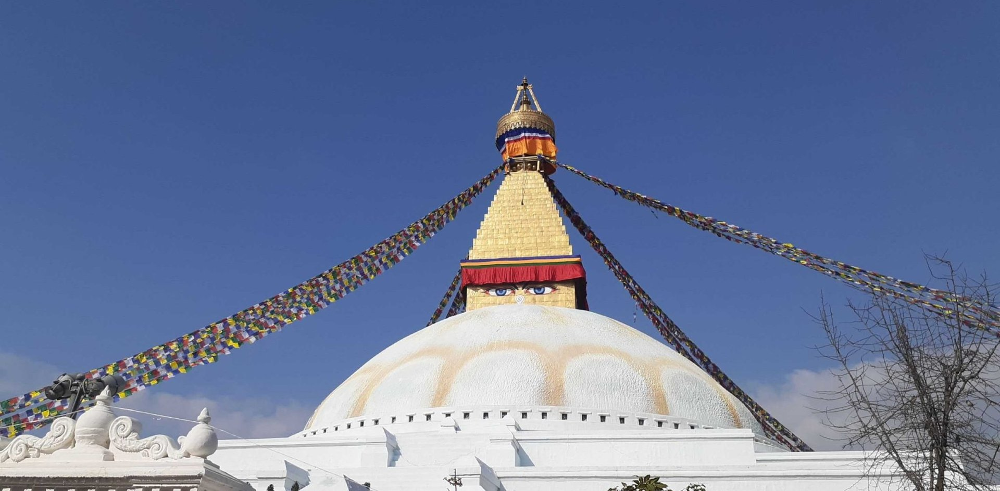
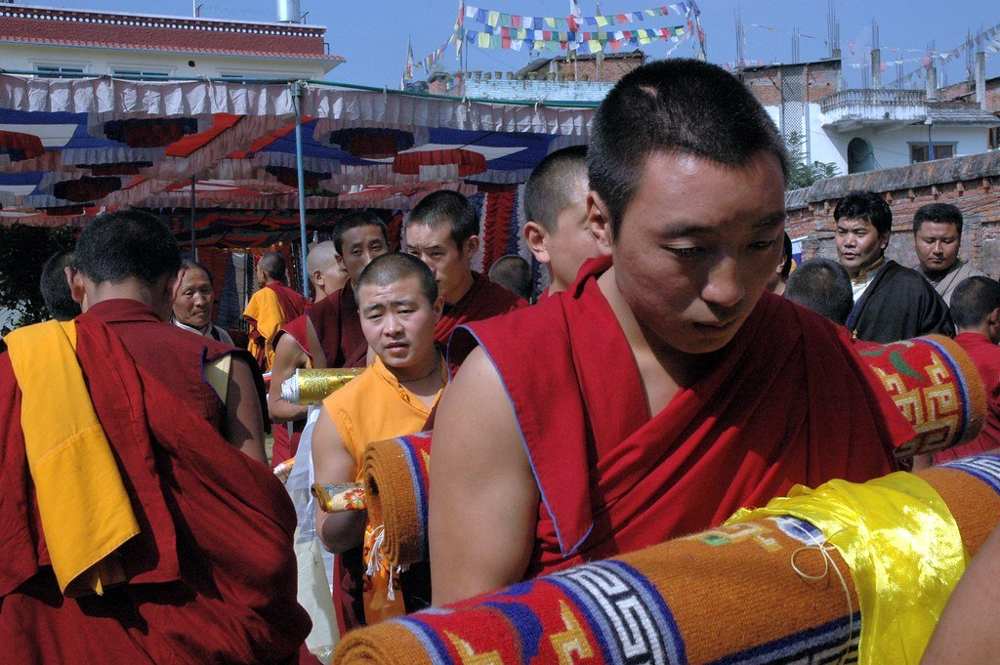
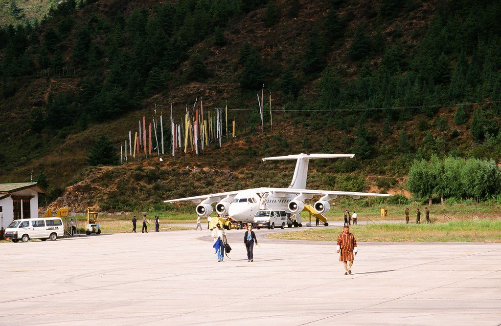
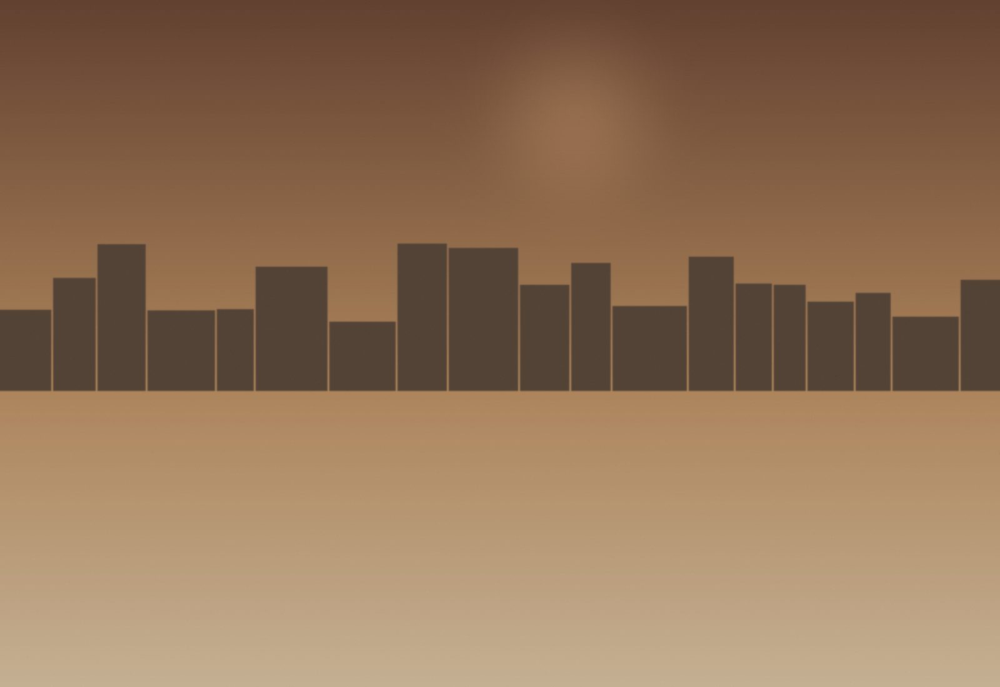
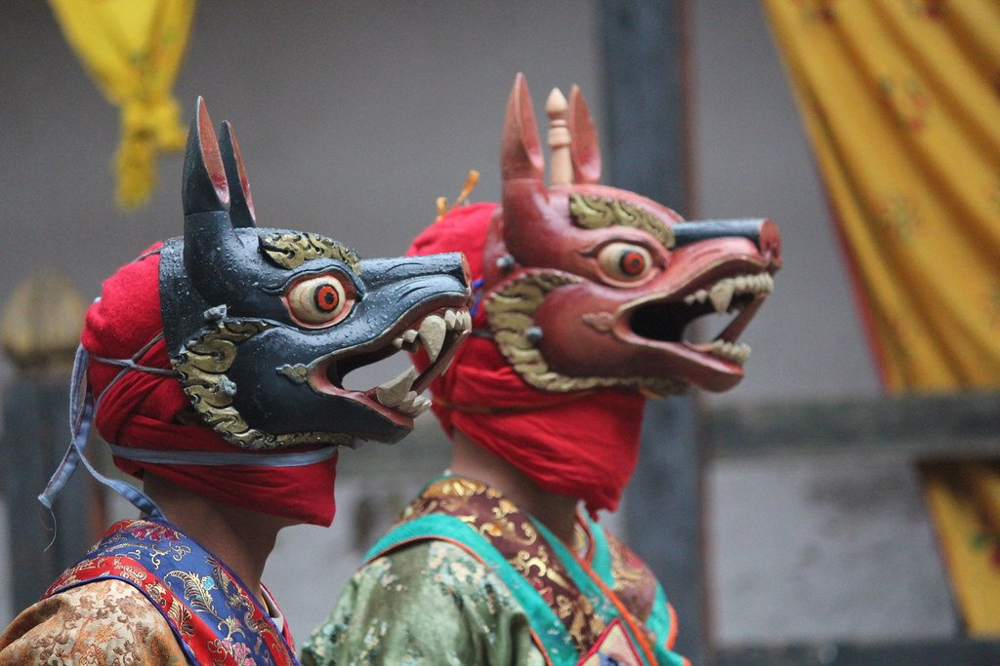
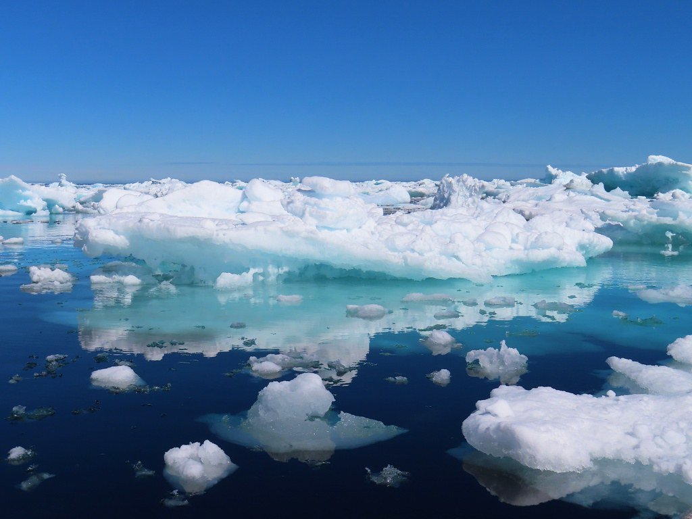
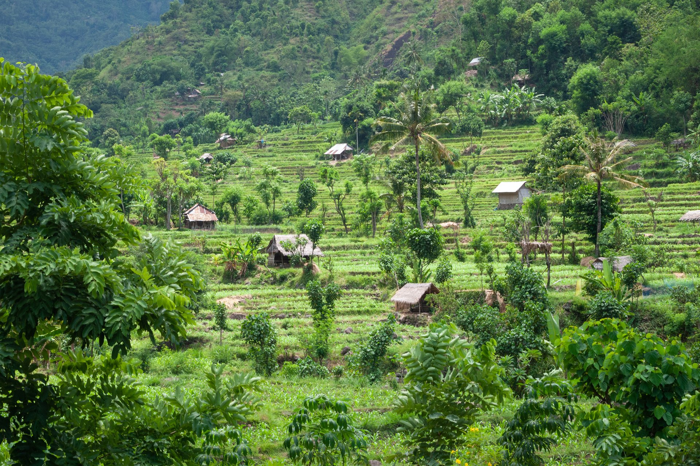
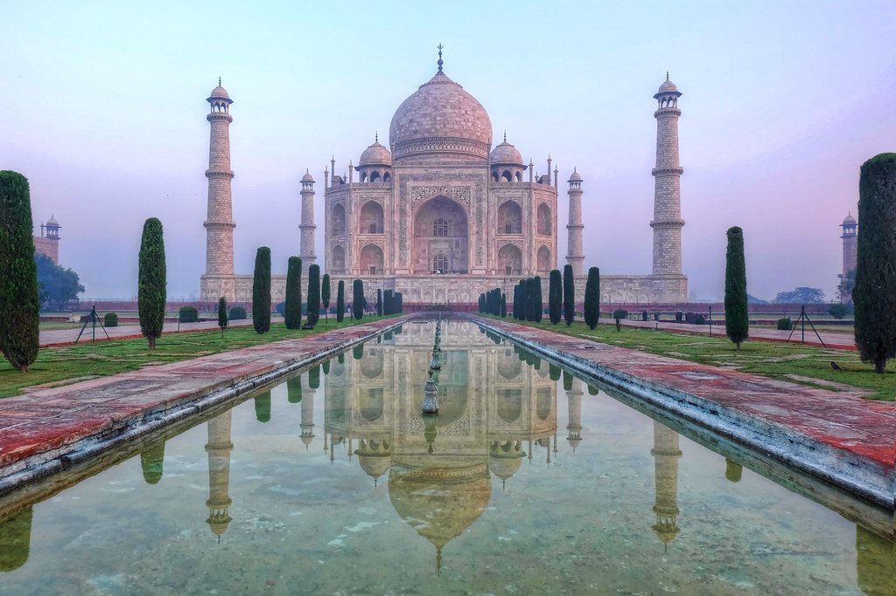

Día 1 · Kathmandu
Llegada a Kathmandu
Recepción con guirnalda y khata blanco. Cena newari en Dwarika's. Presentación del guía cultural bilingüe español-inglés.


Corazón del Himalaya · Vajrayana, el festival Tsechu y el monasterio en el acantilado · Abril 2027
Ver fechas y preciosBután tiene dos singularidades constitucionales. Mide su éxito por la Felicidad Nacional Bruta (no por PIB), y es el último país donde el Budismo Vajrayana —la rama tántrica, la más esotérica del budismo— sigue siendo religión de estado y práctica viva ininterrumpida desde el siglo VIII, cuando Padmasambhava cruzó los Himalayas. Las visualizaciones tántricas, los mandalas, las ceremonias cham no son turismo cultural — son la práctica espiritual cotidiana.
El viaje gira alrededor del Paro Tsechu, el festival de máscaras que recrea episodios de la vida de Padmasambhava. El día final, antes del amanecer, se despliega el thongdrel — un thangka monumental de 30 metros que solo se ve este día. Verlo libera del karma negativo según la tradición. Trece días con Kathmandu como puerta y aclimatación, Bután en cuatro valles (Thimphu, Punakha, Gangtey, Paro), monasterios sin filtro, y el ascenso final al Tiger's Nest.

Dos días en el festival monástico más importante de Bután, con acceso a zona privilegiada y el desenrollo del thangka de 30m antes del amanecer.
El monasterio del siglo VIII que cuelga a 3.120 m sobre un acantilado, donde Padmasambhava meditó tres años, tres meses, tres semanas y tres días. Caballos disponibles.
Conversación filosófica privada con un maestro Vajrayana en el monasterio fundado por Shabdrung en el siglo XVII.
Recepción con guirnalda y khata blanco. Cena newari en Dwarika's. Presentación del guía cultural bilingüe español-inglés.

Boudhanath stupa con kora junto a peregrinos tibetanos. Monasterio tibetano. Pashupatinath (ghats de cremación). Bhaktapur — plaza Durbar, templo Nyatapola.
Vuelo Druk Air (aterrizaje espectacular entre cordilleras). Traslado a Thimphu. Memorial Chorten + Tashichhodzong.

Cheri Monastery con encuentro privado con lopen. Almuerzo en farmhouse butanesa. Zorig Chusum (artesanías), maestro de thangka. Baño de piedras calientes dotsho.
Cruce del paso Dochu La (3.150m) con 108 chortens. Punakha Dzong en confluencia Pho Chhu + Mo Chhu.
Caminata por arrozales a Chimi Lhakhang (templo de fertilidad de Drukpa Kunley). Visita a familia tejedora kushuthara. Partida privada de tiro con arco.
4-5 hrs a través del paso Pele La (3.420m) hasta el valle glacial Phobjikha. Visita al Gangtey Monastery (linaje Nyingma). Sendero Gangtey Nature Trail.
6-7 hrs a Paro via Wangdue. Paisajes del centro de Bután. Llegada al ocaso.

Vestidos con kira y gho (requerido por ley para entrar al dzong). Acceso a zona privilegiada del festival. Danzas cham: Baile de los Esqueletos, Cuerno Negro, Animales. Picnic gourmet.
4:00 AM al dzong. 5:00 AM: el thongdrel de 30m se despliega antes del amanecer. Mañana libre. Museo Nacional de Bután en el Ta Dzong.

Subida de 700m / 4km / 3hrs al monasterio del siglo VIII colgando del acantilado. Caballos hasta mitad para quien quiera. Cena de despedida con lectura del Bardo Thödol.
Vuelo Druk Air. Tarde libre o Patan Durbar Square.
Traslado Tribhuvan según horarios.
Sumá días al final del viaje, con salidas privadas.

Vuelo a Lukla y trek a Everest Base Camp (5.364m). Para los más aventureros, con guía sherpa.

Extender en Bután: el valle central, cuna espiritual del país, con Jakar Tsechu si las fechas coinciden.

Bardia National Park, los tigres de Bengala fuera del circuito Chitwan, en lodge sustentable.
| Salida | Disponibilidad | Precio desde | |
|---|---|---|---|
| 8 abr 2027 | Abierta | $11,500 | Reservar → |
| 11 abr 2027 | Pocas plazas | $11,500 | Reservar → |
| 15 abr 2027 | Lista de espera | $11,500 | Reservar → |
| 22 abr 2027 | Abierta | $10,900 | Reservar → |
| 29 abr 2027 | Abierta | $10,900 | Reservar → |
Precios por persona en habitación doble. Suplemento de habitación individual a consultar.